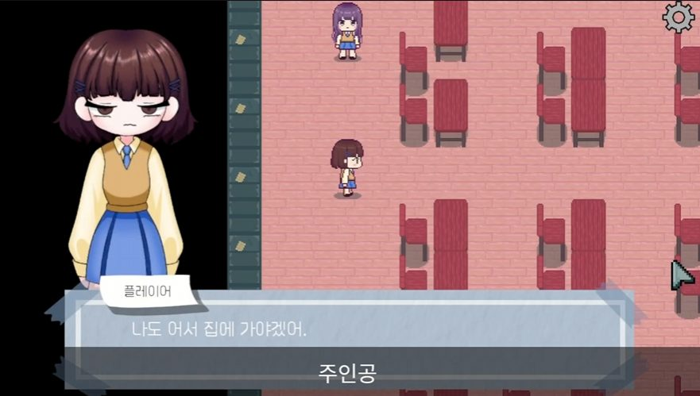

본 개발
반복되는 하루, 분기 8개 엔딩, 60분 내외 플레이
04 / CLUB · 2023.07—08
Dirty Guilty
한얼 동아리 1학년 10명이 만든 스토리형 공포 게임입니다.
프로그래머(TD)로 참여했고, QA 이슈 중 64건을 맡았습니다.

Dirty Guilty 트레일러 ↗01 / PLAN
기획 1명, 그래픽 6명, 프로그래머 3명이 작업 항목마다 담당자와 예상 시간을 적은 WBS 계획표로 움직였습니다.
반복되는 하루, 분기 8개 엔딩, 60분 내외 플레이
아이템·인벤토리, 버그 수정, QA
시나리오, 분기·엔딩 시스템 기획, 다이얼로그 작성
배경 러프에서 도트까지, 캐릭터·아이템 도트, 엔딩 일러스트
이동·카메라, 다이얼로그 시스템, 키 변경 UI, 게임오버 타임라인·시네머신
02 / QA
담당자·문제·재현 경로·우선순위(필수·높음·낮음)·상태를 한 줄에 남기고, 비고란으로 되묻고 답했습니다.
104건 중 92건을 완료했습니다. 본인이 맡은 64건 중 55건을 처리했습니다.
기획에 없던 동작은 대사를 고치거나 처음부터 열어 두는 쪽으로 정리했고, 진엔딩 이후 흐름처럼 정하기 어려운 건은 회의 안건으로 넘겼습니다.
03 / FEEDBACK
KOG 현업 피드백에서 예외적인 플레이 흐름 처리, 키보드·마우스 조작 통일, 하교 시 날짜 전환 연출, 배경 디테일 네 가지 개선점을 받았습니다.
팀 드라이브에 남은 문서를 요약했습니다.
팀원 실명이 담긴 원본 시트는 게시하지 않습니다.